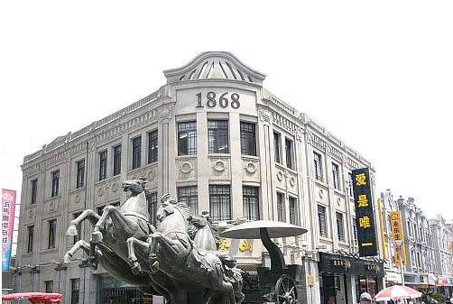

温州地标性建筑
坐标：解放路与公园路交叉路口

五马街（Five Horses Street），古称五马坊，温州旧城古街道之一。东起解放街与园路交叉路口，西至蝉街与府前街交叉路口，五马街长400米，宽12米，街两侧有14条小巷。相传五马街始于东晋，唐宋沿袭不变，清代改名五马街，1934年改名中山路，1949年后恢复五马街之名。
坐标：温州市世纪广场
温州大剧院以其独特的建筑造型、先进的舞台技术和完善的演出功能跻身国内现代化的剧院之列。温州大剧院的外形别具风格，从正面看，它像一条翘首跃出水面、欲跳龙门的鲤鱼；从侧面看，它宛如一个个张开“臂膀”的贝壳；从上往下看，它犹如一条游走于水中的金鱼。
坐标：温州市世纪广场
温州世纪广场位于温州市中心，是一个集休闲、娱乐、文化、商业于一体的综合性广场。广场占地面积约10万平方米，设有大型喷泉、绿化带、休闲座椅等设施，是市民休闲娱乐的好去处。每当夜幕降临，广场上的灯光秀和喷泉表演吸引了众多游客和市民前来观赏。